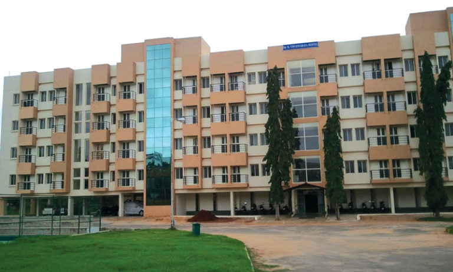

RV College of Engineering
Table of Contents
- RVCE Bangalore Highlights
- RVCE Bangalore: Admission Process
- Eligibility Criteria
- Admission Process
- Benefits of Management Quota Admission
- Conclusion
Contact Us
Fields marked with an * are required
Fields marked with an * are required
Rashtreeya Vidyalaya College of Engineering (RVCE) is a private technical college in Bangalore. The college was established in the year 1963 and is one of the earliest self-financing engineering colleges. It is managed by Rashtreeya Sikshana Samithi Trust. The institute is one of the country’s leading engineering institute. The college was ranked 58th in 2018 and 63rd in 2019 by NIRF.
The college has 14 departments which offer 12 UG programmes and 21 PG programmes. The college has multiple collaborations with international institutions for consultancies, research activities, lab setup, research and development. They have tie-ups with Deeproot Linux Cognizant Technology Solutions, Bosch Rexroth, SAP India Pvt. Limited, etc.
RVCE Bangalore offers a student exchange program in collaboration with the University of Applied Science Würzburg-Schweinfurt from Bavaria, Germany. Students who have completed a certification course at RVCE will be eligible to apply to study at FHWS in Mechatronics, Business and Engineering and Logistics in any program. During the course, a six-month internship has to be done.

| Year of establishment | 1963 |
| Campus | Bengaluru |
| Recognised by | AICTE |
| College rankings | 70 for Engineering by NIRF in 2020 63 for Private Engineering by NIRF in 2019 |
| Modes of education | Full-time |
| Number of courses offered | 35 courses in 3 streams |
| Total no. of seats | 1200 |
| Total Scholarships disbursed | 4 |
| Salary offered (2019) Highest/Average | Rs 50 LPA/Rs 8.63 LPA |
| Affiliation | Visvesvaraya Technological University |
| Official website | www.rvce.edu.in |
| Gender intake | Co-ed |
| Application mode | Online |
The application process for admissions to BTech commences with the online registrations for JEE Mains/KCET (for Karnataka candidates)/COMEDK (for outside Karnataka candidates), and the application process for admissions to PG courses commences with the online registrations for GATE/PGCET. The application fee can be paid via Bank Challan or Demand Draft (drawn in favor of Executive Director Karnataka Examinations Authority, payable at Bangalore).
Admissions to all the programme is based on the scores obtained in the required entrance exam, followed by the Counseling. Interested candidates can refer to below mentioned details about RVCE admission process:
To qualify for management quota admission at RV College of Engineering, you must satisfy the following requirements:
The following steps are involved in securing management quota admission at RV College of Engineering:
Here are some of the benefits of securing admission through management quota:
In conclusion, securing management quota admission at RV College of Engineering is a viable option for students who are unable to meet the rigorous eligibility criteria for the regular admission process. With the limited number of seats under the management quota, candidates have a higher chance of securing a seat. By focusing on academic performance instead of entrance exam preparation, students can save time and effort while still ensuring a place in the prestigious institution. If you meet the eligibility criteria, you can apply for management quota admission by following the application process specified by the college.